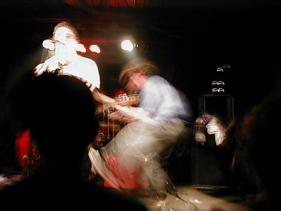
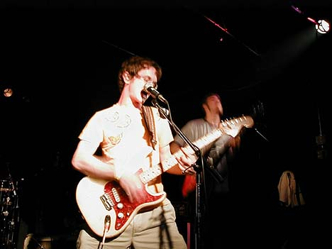
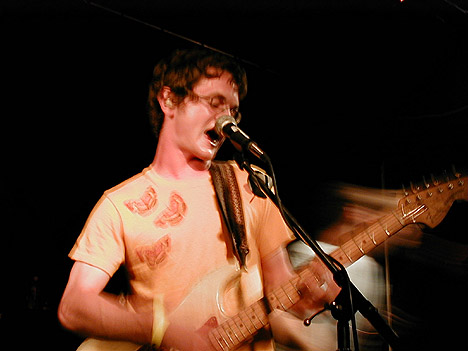
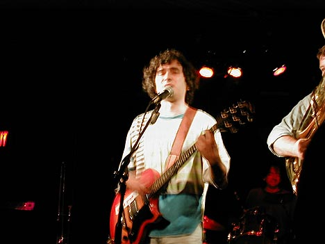

Big Orange Crayonmusical thingsLegends of Rodeo, Visual Reason, The Orange, and Butterfly Joe at Valentine's, July 29th, 2000 ...with a few pictures at the bottom I'd say that this was a very entertaining show. All of the bands were very witty in their own ways, which made it all the more enjoyable. And the music was good, too. Legends of Rodeo were the first band to play. I didn't even know that they were going to be there, but they were a pleasant enough suprise. They sound very similar to the Promise Ring and covered a Bruce Springstein song. It was their first time playing in the state but they did a good show and I'm sure that lots of people will see them again if they come back. Visual Reason was on next. They did a really energetic show and gave out bottles of bubbles that filled the air near the end, which was pretty cute. Apparently, they made a promise beforehand that they would wear any shirts that people threw onto the stage, so they were innundated with really tight shits. Then some guy came up and kissed the singer for a fish. I laugh. The Orange, of course, rocked. Ben had lost his voice the day before, so he sounded pretty raspy, but the band played really hard and I think that if you didn't know what he normally sounds like, you wouldn't have noticed that there was anything wrong. They gave out kazoos, too! (There was an audience participation thingie on "Gold Standard" where they came it to effect.) Butterfly Joe was the last band on. Two of the guys in the band are from the Dead Milkmen. They did a wonderful show, but I wouldn't begin to know how to classify their music. (Witty ecclectic power pop?) There was steamy accordian action and tuba action. I would have bought their CD afterward, but I was really tired and it just sort of slipped my mind. I'll buy it sometime, hopefully. Almost all of the pictures I took came out really badly since I set the exposure wrong. That's why there aren't any Legends of Rodeo pictures here... Visual Reason:  The Orange:   Butterfly Joe  |